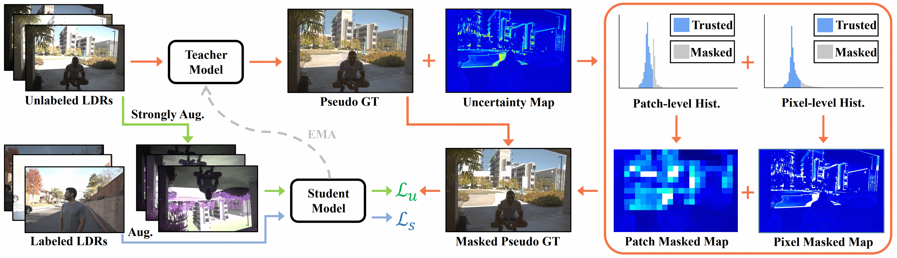
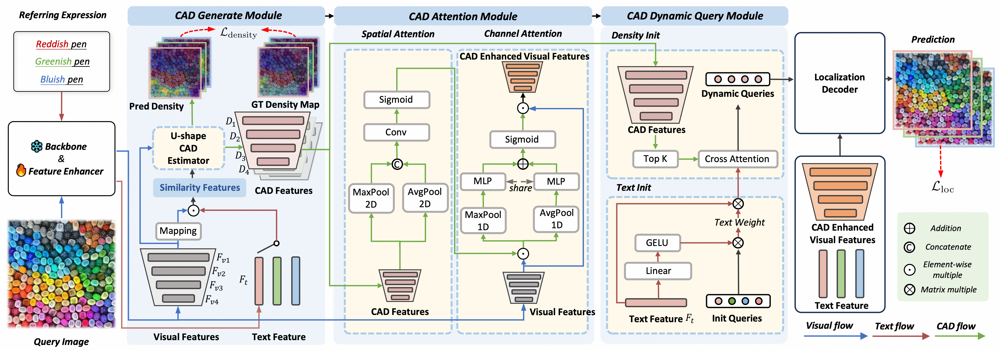
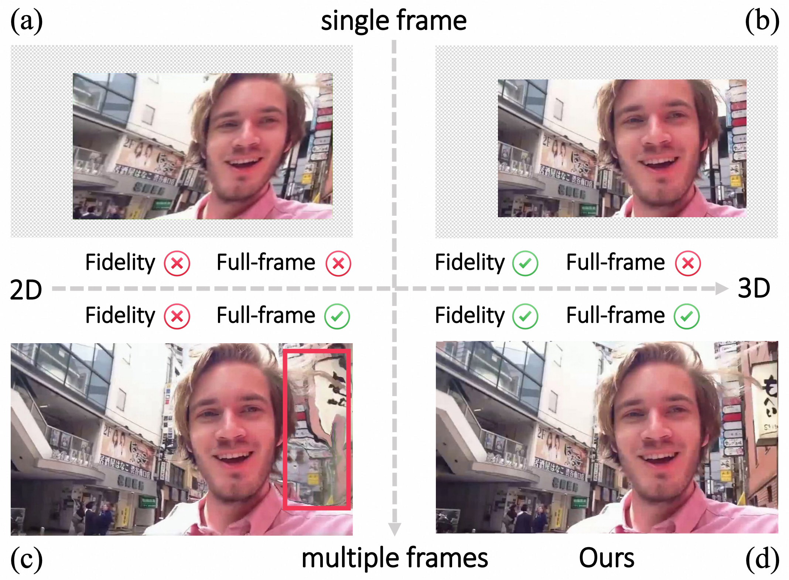
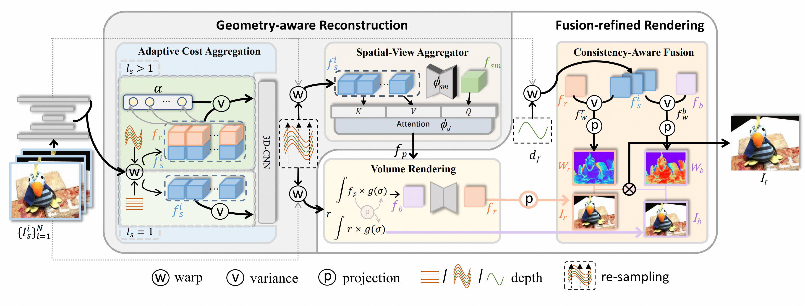
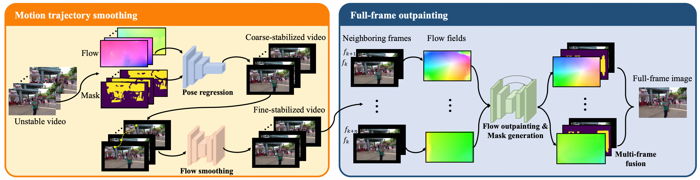

😃 About Me
I am Zhan Peng (彭展 in Chinese). I am a PhD student at the School of Artificial Intelligence and Automation, Huazhong University of Science and Technology (HUST), advised by Prof. Zhiguo Cao. Before that, I received my master's and bachelor's degrees from HUST in 2025 and 2022, respectively.
My research interests include world model, video generation, 3D vision, video stabilization, and image/video restoration.
🔥 News
- 2026-06 : 🔥🔥 CaR is released.
- 2026-06 : 🎉🎉 MoCam is accepted to ECCV 2026.
- 2026-02 : 🎉🎉 MoCha is accepted to CVPR 2026.
- 2024-07 : 🎉🎉 NECHDR is accepted to ACM MM 2024.
- 2024-02 : 🎉🎉 RStab and GuFu are accepted to CVPR 2024.
- 2023-07 : 🎉🎉 Fast-Stab is accepted to ICCV 2023.
📝 Publications
(* denotes equal contribution.)
[arXiv 2026]
Compression and Retrieval: Implicit Memory Retrieval for Video World Models
Zhan Peng, Jie Ma, Huiqiang Sun, Chong Gao, Zhijie Xue, Zhiyu Pan, Zhiguo Cao, Jun Liang, Jing Li
[Project Page]
[Paper]
[Code]
We propose Compression and Retrieval, an attention-driven implicit memory retrieval mechanism for scene-consistent interactive video generation.
[arXiv 2026]
Prisma-World: Camera-Controllable Multi-Agent Video World Model
Huiqiang Sun*, Zhan Peng*, Size Wu, Kun Wang, Kang Liao, Dianyi Wang, Xingyu Zeng, Sheng Jin, Yangguang Li, Zhiguo Cao, Ziwei Liu, Wei Li
[Project Page]
[Paper]
[Code]
We propose Prisma-World, a multi-agent world model with multi-agent RoPE and camera-aware cross-view consistency modeling.
[arXiv 2026]
SmartDirector: Keyframe-Conditioned Cinematic Video Generation with Narrative Pacing Control
Zhida Zhang, Jie Ma, Zhan Peng, Haoxue Wu, Yang Han, Jun Liang, Jie Cao, Jing Li
[Project Page]
[Paper]
[Code]
[HuggingFace]
SmartDirector supports flexible generation scenarios including single-shot generation, multi-shot narrative synthesis, and video extension.
[ECCV 2026]
MoCam: Unified Novel View Synthesis via Structured Denoising Dynamics
Haofeng Liu, Yang Zhou, Ziheng Wang, Zhengbo Xu, Zhan Peng, Jie Ma, Jun Liang, Shengfeng He, Jing Li
[Project Page]
[Paper]
[Code]
We propose MoCam, a method that enables robust novel view synthesis even with highly incomplete or distorted geometric priors.
[CVPR 2026]
MoCha: End-to-End Video Character Replacement without Structural Guidance
Zhengbo Xu, Jie Ma, Ziheng Wang, Zhan Peng, Jun Liang, Jing Li
[Project Page]
[Paper]
[Code]
[HuggingFace]

MoCha performs high-quality character replacement with only a single first-frame mask by unifying different conditions into a single token stream.

[AAAI 2026]
Semi-Supervised High Dynamic Range Image Reconstructing via Bi-Level Uncertain Area Masking
Wei Jiang*, Jiahao Cui*, Yizheng Wu, Zhan Peng, Zhiyu Pan, Zhiguo Cao
[Paper]
[Code]
We establish a semi-supervised HDR image reconstructing framework firstly taking the predicted uncertainty of pseudo GTs into account.

[arXiv 2025]
Generative Photographic Control for Scene-Consistent Video Cinematic Editing
Huiqiang Sun*, Liao Shen*, Zhan Peng, Kun Wang, Size Wu, Yuhang Zang, Tianqi Liu, Zihao Huang, Xingyu Zeng, Zhiguo Cao, Wei Li, Chen Change Loy
[Project Page]
[Paper]
[Code]
CineCtrl is the first video cinematic editing framework that provides fine control over professional camera parameters. We have five photographic effect parameters (Bokeh blur parameter, Refocused disparity, Focal length, Shutter speed, Color temperature) and one camera poses control parameter.

[CVPR 2025]
Exploring Contextual Attribute Density in Referring Expression Counting
Zhicheng Wang, Zhiyu Pan, Zhan Peng, Jian Cheng, Liwen Xiao, Wei Jiang, Zhiguo Cao
[Paper]
[Code]
We pioneer the concept of contextual attribute density in REC, enabling more precise differentiation between fine-grained descriptions of objects within the same class.

[ACM MM 2024]
Exposure Completing for Temporally Consistent Neural High Dynamic Range Video Rendering
Jiahao Cui, Wei Jiang, Zhan Peng, Zhiyu Pan, Zhiguo Cao
[Paper]
[Code]
Our work proposes a novel HDR video rendering framework, a.k.a., the NECHDR, which completes the missing exposure information by interpolating LDR frames.

[CVPR 2024]
3D Multi-Frame Fusion for Video Stabilization
Zhan Peng, Xinyi Ye, Weiyue Zhao, Tianqi Liu, Huiqiang Sun, Baopu Li, Zhiguo Cao
[Paper]
[Code]
[Video]
We present RStab, a novel framework for video stabilization that integrates 3D multi-frame fusion through volume rendering.

[CVPR 2024]
Geometry-Aware Reconstruction and Fusion-Refined Rendering for Generalizable Neural Radiance Fields
Tianqi Liu, Xinyi Ye, Min Shi, Zihao Huang, Zhiyu Pan, Zhan Peng, Zhiguo Cao
[Project Page]
[Paper]
[Code]
We present GeFu, a generalizable NeRF method that synthesizes novel views from multi-view images in a single forward pass.

[ICCV 2023]
Fast Full-Frame Video Stabilization with Iterative Optimization
Weiyue Zhao, Xin Li, Zhan Peng, Xianrui Luo, Xinyi Ye, Hao Lu, Zhiguo Cao
[Paper]
[Code]
We propose a formulation of video stabilization as a fixed-point problem of the optical flow field and propose a novel procedure to generate a model-based synthetic dataset.
🏆 Honors & Awards
- 2024 National Scholarship (Top 0.2% Nationwide)
- 2024 Merit Student (Top 2%)
- 2023 Merit Student (Top 2%)
📎 Links
- Personal Homepage: https://pzzz-cv.github.io
- Github: https://github.com/pzzz-cv
- Google Scholar: https://scholar.google.com/citations?user=pCHiQQcAAAAJ